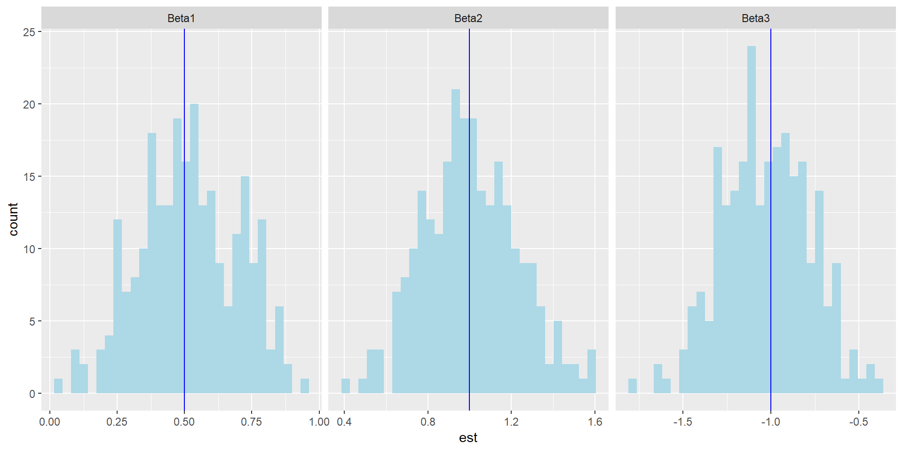
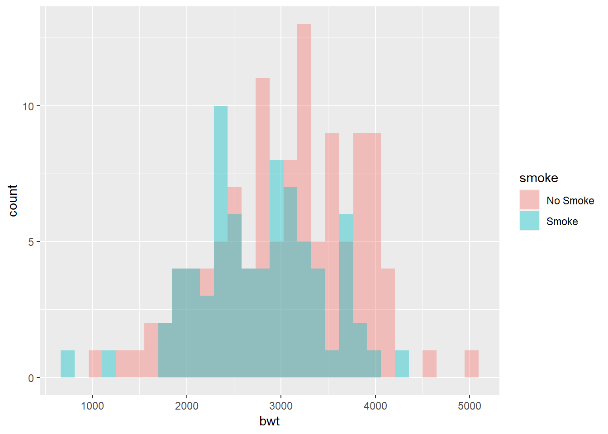

Chapter 7 Statistical Inference in R
In this chapter, we discuss how to perform some parameter estimations and hypothesis testings in R. You may have learned their theory in previous statistics courses. I do not intend to give a very comprehensive review to these methods due to time constraint.
Optional Readings:
- You can find a few more statistical tests in Ch 9 of R Cookbook (https://rc2e.com/)
- You can review Ch 10-13 of John E. Freund’s Mathematical Statistics with Applications by Irwin Miller and Marylees Miller (textbook for STAT 269) for some background and theory on statistical inference
7.1 Maximum Likelihood Estimation
After you collect some data and formulate a statistical model, you have to estimate the parameters in your model. One of the most common methods is to use maximum likelihood estimation. Very often, there is no closed-form expression for your estimators. In general, suppose you have data \(y_1,\ldots,y_n\). The likelihood function is a function of the parameter defined as \[\begin{equation*} L(\theta|y_1,\ldots,y_n) = f_{y_1,\ldots,y_n}(y_1,\ldots,y_n|\theta), \end{equation*}\] where \(f_{y_1,\ldots,y_n}(\cdot |\theta)\) is the joint pmf or pdf of \(y_1,\ldots,y_n\) with parameter \(\theta\). That is, the likelihood function evaluated at \(\theta\) is simply the joint “probability” of observing \(y_1,\ldots,y_n\) when the parameter value is \(\theta\). Assuming \(y_1,\ldots,y_n\) are i.i.d. with density \(f(\cdot|\theta)\), we have \[\begin{equation*} L(\theta|y_1,\ldots,y_n) = f_{y_1,\ldots,y_n}(y_1,\ldots,y_n|\theta) = \prod^n_{i=1} f(y_i|\theta). \end{equation*}\] In maximum likelihood estimation, we estimate the parameter \(\theta\) by maximizing \(L\). The maximizer is called the maximum likelihood estimator (MLE).
Some theory
Why do we want to maximize the likelihood?
- Informally, the likelihood is the chance of observing the data. Therefore, we want to find the parameters so that such a chance is maximized.
- MLE has good statistical properties. Under some regularity conditions,
- MLE is consistent: \(\hat{\theta}_n\) converges in probability to \(\theta_0\)
- Asymptotically efficient: the estimator has the lowest variance asymptotically in some sense
- Asymptotically normality: can be used to find confidence intervals and perform hypothesis testings
Example (Logistic Regression): Suppose we observe \(\{(x_i, y_i):i=1,\ldots,n\}\), where \(y_i\) is a binary variable and \(x_i\) is a vector of covariates (including the intercept \(1\)). In logistic regression we assume that \[\begin{equation*} P(Y_i = 1|x_i, \beta) = \frac{e^{x^T_i \beta}}{1+e^{x^T_i \beta}} = \frac{ e^{\beta_0 + \beta_1 x_{i1} +\ldots +\beta_p x_{ip}}}{1 + e^{\beta_0 + \beta_1 x_{i1} +\ldots +\beta_p x_{ip}}}. \end{equation*}\] Since \(Y_i\) takes only two values, \[\begin{equation*} P(Y_i = 0|x_i, \beta) = \frac{1}{1+e^{x^T_i \beta}}. \end{equation*}\] We can use one single formula for \(y = 0, 1\): \[\begin{equation*} P(Y_i = y|x_i, \beta) = \frac{e^{(x^T_i \beta)y_i}}{1+e^{x^T_i \beta}}. \end{equation*}\] The likelihood function (conditional on x) is \[\begin{equation*} L(\beta|y_1,\ldots,y_n, x_1,\ldots,x_n) = \prod^n_{i=1} P(Y_i = y_i|x_i, \beta) = \prod^n_{i=1} \frac{e^{(x^T_i \beta)y_i}}{1+e^{x^T_i \beta}}. \end{equation*}\] The MLE of \(\beta\) is obtained by maximizing \(L(\beta|y,x)\) with respect to \(\beta\). We usually maximize the natural logarithm of the likelihood function instead of the likelihood function, which is easier.
The log likelihood function is \[\begin{equation*} \sum^n_{i=1} \bigg( (x^T_i \beta) y_i - \log(1+e^{x^T_i \beta}) \bigg). \end{equation*}\]
In this case, there is no closed-form formula for finding the maximizer. Nevertheless, we can use numerical methods to find out the maximizer. Of course, there are existing functions to perform this task in R. However, we will illustrate how to perform an optimization using the function optim(). By default, optim() will find the minimum. Therefore, we will minimize the negative of the log likelihood function.
Simulated Example
This is also a good time to introduce how to perform simulation based on a model and check the validity of the estimation method and algorithm. We will first generate some covariates and binary variables based on the logistic regression model.
# Setting
set.seed(362)
n <- 1000
beta_0 <- c(0.5, 1, -1) # true beta
# Simulation
x1 <- runif(n, 0, 1)
x2 <- runif(n, 0, 1)
prob_num <- exp(beta_0[1] + beta_0[2] * x1 + beta_0[3] * x2)
prob <- prob_num / (1 + prob_num)
y <- rbinom(n, size = 1, prob = prob)Now, we will write a function to compute the negative of the log likelihood function (as a function of the parameter \(\beta\) and the data \(\{y_i, x_{i1}, x_{i2}: i=1,\ldots,n\}\)), which is the objective function to be minimized.
neg_log_like <- function(beta, y, x1, x2) {
beta_X <- beta[1] + beta[2] * x1 + beta[3] * x2
log_like <- sum(beta_X * y) - sum(log(1 + exp(beta_X)))
-log_like # return the negative log likelihood
}After defining our objective function, we can now use optim() to perform the optimization.
optim(par = runif(3, 0, 1), f = neg_log_like,
y = y, x1 = x1, x2 = x2, method = "BFGS")
## $par
## [1] 0.7830734 1.0067301 -1.4920231
##
## $value
## [1] 632.7284
##
## $counts
## function gradient
## 28 7
##
## $convergence
## [1] 0
##
## $message
## NULLparis the initial values for the optimization. We set some random numbers for the initial values bypar = runif(3, 0, 1).- Because the function
neg_log_likehave multiple arguments, we have to supply them insideoptim(). method = "BFGS"is a quasi-Newton method.method = "L-BFGS-B"is also useful when you want to add box constraints to your variable. You can check?optimto learn more about this.
Output:
paris the parameter values at which the minimum is obtainedvalueis the minimum function valueconvergence = 0indicates successful completion
Compare with the built-in function glm() for estimating the parameters:
# will discuss this in more detail later
fit <- glm(y ~ x1 + x2, family = "binomial")
fit
##
## Call: glm(formula = y ~ x1 + x2, family = "binomial")
##
## Coefficients:
## (Intercept) x1 x2
## 0.7831 1.0067 -1.4920
##
## Degrees of Freedom: 999 Total (i.e. Null); 997 Residual
## Null Deviance: 1324
## Residual Deviance: 1265 AIC: 1271You can see that both methods give the same estimates 0.783, 1.007, -1.492 for the regression coefficients.
How do you know your method of estimation makes sense? How do you know if you have simulated the data correctly? In the above example, the true parameters are 0.5, 1, -1. The estimates are not really that close to the true values. We do not know if the estimation method will give a good result in general. To tackle this problem, we could simulate many datasets, perform the estimation, and take a look at the distributions of the estimates.
Perform the simulation and estimation \(250\) times:
# Setting
n <- 1000
beta_0 <- c(0.5, 1, -1) # true beta
no_iter <- 250
beta_est <- matrix(0, nrow = no_iter, ncol = length(beta_0))
for (i in 1:no_iter) {
# Simulation
x1 <- runif(n, 0, 1)
x2 <- runif(n, 0, 1)
prob_num <- exp(beta_0[1] + beta_0[2] * x1 + beta_0[3] * x2)
prob <- prob_num / (1 + prob_num)
y <- rbinom(n, size = 1, prob = prob)
# Estimation
beta_est[i, ] <- optim(par = runif(3, 0, 1), f = neg_log_like,
y = y, x1 = x1, x2 = x2, method = "BFGS")$par
}Displaying the results:
library(tidyverse)
# create the dataframe for plotting
data <- tibble(est = c(beta_est[, 1], beta_est[, 2], beta_est[, 3]),
beta = c(rep("Beta1", no_iter), rep("Beta2", no_iter), rep("Beta3", no_iter)))
# dataframe for adding the vertical lines for the true parameters
vline_data <- tibble(beta = c("Beta1", "Beta2", "Beta3"),
mean = beta_0)
ggplot(data = data, mapping = aes(x = est)) +
geom_histogram(fill = "lightblue") +
facet_grid(~ beta, scales = "free") +
geom_vline(data = vline_data, aes(xintercept = mean), color = "blue")
From the above plots, you can see the distributions of your estimators. The true parameters lie in the middle of the distributions. You can also add lines to visualize the mean of the distributions. In this case, the lines actually overlap with lines for the true parameters. Thus, the estimators are essentially unbiased. You can also see that there are times that \(\hat{\beta}_0\) can be as large as \(1\) or as small as \(0.1\) while the true value is \(0.5\).
You can also use a larger sample size.
# setting
set.seed(362)
n <- 100000
beta_0 <- c(0.5, 1, -1) # true beta
# simulation
x1 <- runif(n, 0, 1)
x2 <- runif(n, 0, 1)
prob_num <- exp(beta_0[1] + beta_0[2] * x1 + beta_0[3] * x2)
prob <- prob_num / (1 + prob_num)
y <- rbinom(n, size = 1, prob = prob)
# Estimation
(est <- optim(par = runif(3, 0, 1), f = neg_log_like,
y = y, x1 = x1, x2 = x2, method = "BFGS")$par)
## [1] 0.4803615 1.0275395 -0.9871783The estimates are now 0.48, 1.03, -0.99, which are close to the true values 0.5, 1, -1.
We will see some applications of the logistic regression later.
7.1.1 Exercises on MLE
Exercise 1 (Gamma distribution)
You observe a random sample \(y_1,\ldots,y_n\) from a Gamma distribution with unknown parameters \(\alpha, \beta\). The likelihood function is \[\begin{equation*} L(\alpha, \beta |y_1,\ldots,y_n) = \prod^n_{i=1} \frac{\beta^\alpha}{\Gamma(\alpha)} y^{\alpha-1}_i e^{-\beta y_i}. \end{equation*}\] The log likelihood, after simpliciation, is \[\begin{equation*} \log L(\alpha, \beta) = n \alpha \log \beta - n \log \Gamma(\alpha) + (\alpha - 1) \sum^n_{i=1} \log y_i - \beta \sum^n_{i=1} y_i. \end{equation*}\]
# Setting
set.seed(1)
alpha <- 1.5
beta <- 2
n <- 10000
# Simulation
x <- rgamma(n, alpha ,beta)
# Optimization (Estimation)
# Assignment 4Exercise 2 (Poisson Regression)
Suppose we observe \(\{(x_i, y_i):i=1,\ldots,n\}\), where \(y_i\) only takes nonnegative integer values (count data) and \(x_i\) is a vector of covariates (including the intercept \(1\)). In Poisson regression, we assume that \(Y_i\) has a Poisson distribution and \[\begin{equation*} \log (E(Y_i|x_i)) = \beta^T x_i = \beta_0 + \beta_1 x_{i1} + \ldots + \beta_p x_{ip}, \end{equation*}\] where \(\beta \in \mathbb{R}^{p+1}\). Alternatively, condition on \(x_i\), \(Y_i|x_i \sim \text{Pois}(e^{\beta^T x_i})\). The likelihood is \[\begin{equation*} L(\beta|y,x) = \prod^n_{i=1} \frac{e^{-e^{\beta^T x_i}} e^{(\beta^T x_i)y_i}}{y_i!}. \end{equation*}\] The log likelihood is \[\begin{equation*} \log L(\beta|y, x) = \sum^n_{i=1} \bigg( -e^{\beta^T x_i} + (\beta^T x_i) y_i - \log (y_i!) \bigg). \end{equation*}\] Clearly, the term \(\log (y_i !)\) does not depend on \(\beta\) and hence we do not need to consider it during our optimization. Therefore, it suffices to maximize (or minimize the negative of) the following objective function \[\begin{equation*} \sum^n_{i=1} \bigg( -e^{\beta^T x_i} + (\beta^T x_i) y_i \bigg). \end{equation*}\]
# Setting
set.seed(1)
beta <- c(0.3, 0.5, -0.5)
n <- 10000
p <- length(beta) - 1
# Simulation
X <- cbind(1, matrix(runif(n * p), nrow = n, ncol = p))
y <- rpois(n, exp(X %*% beta))
# Optimization (Estimation)
# Assignment 47.2 Interval Estimation and Hypothesis Testing
Two types of estimation: point estimation (e.g. MLE) and interval estimation (e.g. confidence interval).
7.2.1 Examples of Hypothesis Testing
Optional reading: Chapter 12 in John E. Freund’s Mathematical Statistics with Applications.
You have a die and you wonder if it is unbiased. If the die is unbiased, the (population) mean of the result from rolling the die is \(3.5\). Suppose you roll the die \(10\) times, the sample mean is \(5\). What is your decision on determining if the die is biased or not? How confident is your decision? What if you roll the die \(100\) times, and the sample mean is \(5\)? What is your decision now? Are you more confident in your decision? What if your roll the die \(10\) times but the sample mean is \(4\)? To answer these questions, we need to understand interval estimation and hypothesis testing.
Some more examples:
An engineer has to decide on the basis of sample data whether the true average lifetime of a certain kind of tire is at least \(42,000\) miles
An agronomist has to decide on the basis of experiments whether one kind of fertilizer produces a higher yield of soybeans than another
A manufacturer of pharmaceutical products has to decide on the basis of samples whether 90 percent of all patients given a new medication will recover from a certain disease
These problems can all be translated into the language of statistical tests of hypotheses.
the engineer has to test the hypothesis that \(\theta\), the parameter of an exponential population, is at least \(42,000\)
the agronomist has to decide whether \(\mu_1 > \mu_2\), where \(\mu_1\) and \(\mu_2\) are the means of two normal populations
the manufacturer has to decide whether \(\theta\), the parameter of a binomial population, equals \(0.90\)
In each case it must be assumed, of course, that the chosen distribution correctly describes the experimental conditions; that is, the distribution provides the correct statistical model.
7.2.2 Null Hypotheses, Alternative Hypotheses, and p-values
An assertion or conjecture about the distribution of one or more random variables is called a statistical hypothesis.
If a statistical hypothesis completely specifies the distribution, it is called a simple hypothesis; if not, it is referred to as a composite hypothesis.
Null hypothesis: In view of the assumptions of “no difference,” hypotheses such as these led to the term null hypothesis, but nowadays this term is applied to any hypothesis that we may want to test.
p-value: the probability of obtaining test results at least as extreme as the results actually observed, under the assumption that the null hypothesis is correct
Steps in Hypothesis Testing
- Assume the null hypothesis is true
- Calculate a test statistic. E.g., sample mean
- Calculate a \(p\)-value (denoted by \(p\)) from the statistic and its distribution. For example, if the die is unbiased, what is the probability that we observe the sample mean to be larger than \(5\) after rolling it \(100\) times?
- small \(p\)-value small: we have strong evidence to reject the null hypothesis because it is unlikely to observe such a test statistic if the null hypothesis is true
- large \(p\)-value small: we do not have enough evidence to reject the null hypothesis
Remark
- In this course, we will follow the “common convention” to reject the null hypothesis when \(p < 0.05\)
- In real applications, how small is small depends on the problems.
- Being statistically significant (small \(p\)-value) does not mean the difference between the null and alternative hypotheses is large. One should also look at the confidence intervals or distributions of your estimates.
7.2.3 Type I error and Type II error
Type I error: reject the null hypothesis when it is true.
The probability of committing a type I error is denoted by \(\alpha\) (level of significance of the test).
Type II error: do not reject the null hypothesis when it is false.
The probability of committing a type II error is denoted by \(\beta\).
| \(H_0\) is true | \(H_1\) is true | |
|---|---|---|
| Reject \(H_0\) | Type I error | No Error |
| Do not reject \(H_0\) | No Error | Type II Error |
A good test procedure is one in which both \(\alpha\) and \(\beta\) are small, thereby giving us a good chance of making the correct decision. When the sample size \(n\) is held fixed, reducing \(\alpha\) by changing the rejection region will increase \(\beta\) and vice versa. The only way in which we can reduce the probabilities of both types of errors is to increase \(n\). As long as \(n\) is held fixed, this inverse relationship between the probabilities of type I and type II errors is typical of statistical decision procedures.
Usually, we control \(\alpha\) to be small (e.g. \(0.05\)).
7.2.4 Inference for Mean of One Sample
Hypothesis Testing Problem
You have a random sample \(X_1,\ldots,X_n\) from a population. You want to know if the population mean \(\mu\) is equal to \(\mu_0\). That is, \(H_0 : \mu =\mu_0\) vs \(H_1: \mu \neq \mu_0\).
Solution
You can use the \(t\)-test for this problem. It is appropriate when either
- Your data is normally distributed
- You have a large sample size \(n\). A rule of thumb is \(n > 30\).
The test statistic is
\[\begin{equation*}
\frac{\overline{X}_n - \mu_0}{s/\sqrt{n}},
\end{equation*}\]
where \(\overline{X}_n\) is the sample mean and \(s\) is the sample standard deviation. In R, use t.test() to perform the t-test.
# Simulate the data
set.seed(362) # so that you can replicate the result
x <- rnorm(75, mean = 100, sd = 15)
# Perform t-test
t.test(x, mu = 95)
##
## One Sample t-test
##
## data: x
## t = 4.7246, df = 74, p-value = 1.071e-05
## alternative hypothesis: true mean is not equal to 95
## 95 percent confidence interval:
## 99.36832 105.74018
## sample estimates:
## mean of x
## 102.5543The \(p\)-value is small, so it is unlikely that the mean of the population is \(95\). The \(p\)-value in this case is \(2 \times P_{H_0}(T > |\text{obs. T.S.|})\), where \(T\) has a \(t\)-distribution with degrees of freedom \(n-1\) if the data from are from a normal distribution and obs. T.S. stands for the observed test statistic. The subscript \(H_0\) is to stress that the probability measure is under \(H_0\).
[Optional] How are the test statistic and \(p\)-value calculated?
# test statistic
(obs_ts <- (mean(x) - 95) / (sd(x) / sqrt(length(x))))
## [1] 4.724574
# p-value
2 * (1 - pt(abs(obs_ts), df = length(x) - 1))
## [1] 1.071253e-05What do you expect when \(x\) is from a distribution with a much larger SD?
set.seed(362) # so that you can replicate the result
x2 <- rnorm(75, mean = 100, sd = 200)
(test_x2 <- t.test(x2, mu = 95))
##
## One Sample t-test
##
## data: x2
## t = 1.832, df = 74, p-value = 0.07097
## alternative hypothesis: true mean is not equal to 95
## 95 percent confidence interval:
## 91.57758 176.53580
## sample estimates:
## mean of x
## 134.0567Even if the estimate of the population mean is 134, the test does not reject the null hypothesis that the mean is \(95\). This is because the sample has a very large variance.
Interval Estimation Denote \(\overline{x}_n\) and \(s_n\) be the sample mean and sample standard deviation, respectively. The \(100(1-\alpha)\%\) confidence interval of \(\mu\) is given by \[\begin{equation*} \bigg[ \overline{x}_n - t_{n-1; \alpha/2} \frac{s_n}{\sqrt{n}}, \overline{x}_n + t_{n-1; \alpha/2} \frac{s_n}{\sqrt{n}} \bigg], \end{equation*}\] where \(t_{n-1;\alpha/2}\) satisfies \(P(T > t_{n-1;\alpha/2}) = \alpha/2\) and \(T \sim t(n-1)\).
To find the confidence interval of \(\mu\) in R, use t.test(). For example, the \(99\%\) confidence interval of \(\mu\) is
t.test(x, conf.level = 0.99)
##
## One Sample t-test
##
## data: x
## t = 64.139, df = 74, p-value < 2.2e-16
## alternative hypothesis: true mean is not equal to 0
## 99 percent confidence interval:
## 98.32683 106.78168
## sample estimates:
## mean of x
## 102.5543Remark
- By omitting
mu = 0.95, the default value ismu = 0. Since we are interested in finding the confidence intervals, we do not need to care about the value of \(\mu_0\).
[Optional] Without using t.test():
# just an illustration of how CI can be computed
alpha <- 0.01
n <- length(x)
half_width <- qt(1 - alpha / 2, n - 1) * sd(x) / sqrt(n)
c(mean(x) - half_width, mean(x) + half_width)
## [1] 98.32683 106.78168Interpretation
If you can repeat the experiment many times, then about \(95\%\) of the confidence intervals computed in those many times will contain the true mean.
no_sim <- 10000
set.seed(362) # so that you can replicate the result
true_mean <- 100
CI <- matrix(0, nrow = no_sim, ncol = 2)
for (i in 1:no_sim) {
CI[i, ] <- t.test(rnorm(75, mean = true_mean, sd = 200))$conf.int
}
# find out the proportion of CIs that contain 0
mean(CI[, 1] < 100 & 100 < CI[, 2])
## [1] 0.9503Example
Recall that we talked about how to use simulation to estimate \(P(X > Y)\), where \(X\) and \(Y\) are some random variables. For example, if \(X \sim N(0, 1)\), \(Y \sim \text{Exp}(2)\), and they are independent. R code to estimate \(P(X > Y)\):
set.seed(1)
n <- 10000
X <- rnorm(n, 0, 1)
Y <- rexp(n, 2)
mean(X > Y)
## [1] 0.3299We know the true value is not exactly 0.3299 because the law of large numbers only ensure that the sample mean converges to the true mean. We can use t.test() to find an confidence interval for \(P(X > Y)\).
t.test(X > Y)
##
## One Sample t-test
##
## data: X > Y
## t = 70.162, df = 9999, p-value < 2.2e-16
## alternative hypothesis: true mean is not equal to 0
## 95 percent confidence interval:
## 0.3206831 0.3391169
## sample estimates:
## mean of x
## 0.3299We see that the \(95\%\) CI is (0.321, 0.339). To make the CI narrower, we can increase the number of simulation.
set.seed(1)
n <- 1000000
X <- rnorm(n, 0, 1)
Y <- rexp(n, 2)
t.test(X > Y)
##
## One Sample t-test
##
## data: X > Y
## t = 704.63, df = 1e+06, p-value < 2.2e-16
## alternative hypothesis: true mean is not equal to 0
## 95 percent confidence interval:
## 0.3308521 0.3326979
## sample estimates:
## mean of x
## 0.331775The \(95\%\) CI becomes (0.331, 0.333). The width of the CI is equal to \[\begin{equation*} 2 \times t_{n-1; \alpha/2} \frac{s}{\sqrt{n}}. \end{equation*}\] From the above formula, you could determine the minimum number of simulations required to achieve a certain degree of accuracy,
7.2.5 Comparing the means of two samples
Suppose you have one sample each from two populations. You want to test if the two populations have the same mean.
There are two different \(t\)-tests for this task (assuming data are normally distributed or you have large samples):
the observations are not paired
the observations are paired
To explain the meaning of paired data, consider two experiments to see if drinking coffee in the morning improves your test scores:
Unpaired observations: Randomly select two groups of people. People in one group have a cup of morning coffee and take the test. The other group just takes the test. For each person, we have one test score. All the scores are independent.
Paired observations: Randomly select one group of people. Give them the test twice, once with morning coffee and once without morning coffee. For each person, we have two test scores. Clearly, the two scores are not statistically independent.
Example
We illustrate the paired \(t\)-test using the dataset sleep (no package is required). The data contains the increase in hours of sleep when the subject took two soporific drugs compared to control on \(10\) subjects. Since each subject received two drugs, the observations are paired.
Take a look at sleep:
sleep
## extra group ID
## 1 0.7 1 1
## 2 -1.6 1 2
## 3 -0.2 1 3
## 4 -1.2 1 4
## 5 -0.1 1 5
## 6 3.4 1 6
## 7 3.7 1 7
## 8 0.8 1 8
## 9 0.0 1 9
## 10 2.0 1 10
## 11 1.9 2 1
## 12 0.8 2 2
## 13 1.1 2 3
## 14 0.1 2 4
## 15 -0.1 2 5
## 16 4.4 2 6
## 17 5.5 2 7
## 18 1.6 2 8
## 19 4.6 2 9
## 20 3.4 2 10The sleep data is in a long format. Let’s turn it into a wide format using spread, a function in the package tidyr, which is contained in tidyverse.
(sleep_wide <- spread(sleep, group, extra))
## ID 1 2
## 1 1 0.7 1.9
## 2 2 -1.6 0.8
## 3 3 -0.2 1.1
## 4 4 -1.2 0.1
## 5 5 -0.1 -0.1
## 6 6 3.4 4.4
## 7 7 3.7 5.5
## 8 8 0.8 1.6
## 9 9 0.0 4.6
## 10 10 2.0 3.4Paired \(t\)-test:
t.test(sleep_wide[, 2], sleep_wide[, 3], paired = TRUE)
##
## Paired t-test
##
## data: sleep_wide[, 2] and sleep_wide[, 3]
## t = -4.0621, df = 9, p-value = 0.002833
## alternative hypothesis: true mean difference is not equal to 0
## 95 percent confidence interval:
## -2.4598858 -0.7001142
## sample estimates:
## mean difference
## -1.58The \(p\)-value is \(< 0.05\). We conclude that the effect of the two drugs are different. The \(95\%\) CI of the difference between the two means is (-2.46, -0.70).
Example
Are the means of the birth weights in the smoking group and non-smoking group different?
library(MASS)
t.test(birthwt$bwt[birthwt$smoke == 1], birthwt$bwt[birthwt$smoke == 0])
##
## Welch Two Sample t-test
##
## data: birthwt$bwt[birthwt$smoke == 1] and birthwt$bwt[birthwt$smoke == 0]
## t = -2.7299, df = 170.1, p-value = 0.007003
## alternative hypothesis: true difference in means is not equal to 0
## 95 percent confidence interval:
## -488.97860 -78.57486
## sample estimates:
## mean of x mean of y
## 2771.919 3055.696The \(p\)-value is \(< 0.05\). We conclude that the means are different. The \(95\%\) CI of the difference between the two means is (-489.0, -78.6).
7.2.6 Inference of a Sample Proportion
You have a sample of values from a population consisting of successes and failures. The null hypothesis is the true proportion of success \(p\) is equal to some particular number \(p_0\). The alternative hypothesis is the \(p \neq p_0\).
Example
You flip a coin \(100\) times independently. You want to test if the coin is fair \((p_0 = 0.5)\).
# Simulate the coin flips
set.seed(1)
heads <- rbinom(1, size = 100, prob = .4)
# Test, p_0 = 0.5
(result <- prop.test(heads, 100, p = 0.5))
##
## 1-sample proportions test with continuity correction
##
## data: heads out of 100, null probability 0.5
## X-squared = 2.25, df = 1, p-value = 0.1336
## alternative hypothesis: true p is not equal to 0.5
## 95 percent confidence interval:
## 0.3233236 0.5228954
## sample estimates:
## p
## 0.42The point estimate is 0.42. Although the true probability of success used in the simulation is \(0.4\), for this particular data, we do not reject to null hypothesis that the true probability of success is \(0.5\) as the \(p\)-value equals 0.134, which is larger than \(0.05\). The 95% confidence interval is equal to (0.323, 0.523).
You can change the alternative hypothesis to \(p > p_0\) or \(p < p_0\):
prop.test(heads, 100, p = 0.5, alternative = "greater")
##
## 1-sample proportions test with continuity correction
##
## data: heads out of 100, null probability 0.5
## X-squared = 2.25, df = 1, p-value = 0.9332
## alternative hypothesis: true p is greater than 0.5
## 95 percent confidence interval:
## 0.3372368 1.0000000
## sample estimates:
## p
## 0.42
prop.test(heads, 100, p = 0.5, alternative = "less")
##
## 1-sample proportions test with continuity correction
##
## data: heads out of 100, null probability 0.5
## X-squared = 2.25, df = 1, p-value = 0.06681
## alternative hypothesis: true p is less than 0.5
## 95 percent confidence interval:
## 0.0000000 0.5072341
## sample estimates:
## p
## 0.427.2.7 Testing groups for equal proportions
You have samples from two or more groups. The data from each group are binary-valued: either “success” or “failure”. You want to test if the groups have equal proportions of “success”.
Example
# 3 groups
no_success <- c(48, 60, 50) # no. of successes in the 3 groups
no_trial <- c(100, 100, 100) # corresponding no. of trails in the 3 groups
prop.test(no_success, no_trial)
##
## 3-sample test for equality of proportions without continuity correction
##
## data: no_success out of no_trial
## X-squared = 3.3161, df = 2, p-value = 0.1905
## alternative hypothesis: two.sided
## sample estimates:
## prop 1 prop 2 prop 3
## 0.48 0.60 0.50\(p\)-value is \(> 0.05\). We do not reject the null hypothesis that the three groups have the same proportion of success.
Example
In a class of \(38\) students, \(14\) of them got \(A\). In another class of \(40\) students, only \(10\) got \(A\). We want to know if the difference between the two proportions is statistically significant.
prop.test(c(14, 10), c(38, 40))
##
## 2-sample test for equality of proportions with continuity correction
##
## data: c(14, 10) out of c(38, 40)
## X-squared = 0.7872, df = 1, p-value = 0.3749
## alternative hypothesis: two.sided
## 95 percent confidence interval:
## -0.1110245 0.3478666
## sample estimates:
## prop 1 prop 2
## 0.3684211 0.2500000The \(p\)-value is \(> 0.05\). We do not reject the null hypothesis that the students in the two groups have the same proportion of getting an A.
7.2.8 Testing if two samples have the same underlying distribution
Problem
You have two random samples \(X_1,\ldots,X_n\) and \(Y_1,\ldots,Y_m\). Let \(F\) and \(G\) be the distribution functions of \(X_i\)’s and \(Y_i\)’s respectively. You want to know if \(F \equiv G\).
Solution
You may use the Kolmogorov-Smirnov test.
- \(H_0: F = G\) vs \(H_1: F \neq G\).
- It does not require any assumptions.
- The test statistic is \[ D := \sup_{x \in \mathbb{R}}|F_n(x) - G_m(x)|,\] where \(F_n\) and \(G_m\) are the empirical distribution functions of \(X_i\)’s and \(Y_i\)’s respectively. That is, \[ F_n(x) := \frac{1}{n} \sum^n_{i=1} I(X_i \leq x)\] and \[ G_m(x) := \frac{1}{m} \sum^m_{i=1} I(Y_i \leq x).\]
Example
set.seed(362)
x <- rnorm(100, 0, 1)
y <- rnorm(100, 0, 1)
ks.test(x, y)
##
## Asymptotic two-sample Kolmogorov-Smirnov test
##
## data: x and y
## D = 0.07, p-value = 0.9671
## alternative hypothesis: two-sidedThe \(p\)-value is not small. We do not have enough evidence to reject the null hypothesis that the two distributions are the same.
Example
z <- rnorm(100, 2, 1)
ks.test(y, z)
##
## Asymptotic two-sample Kolmogorov-Smirnov test
##
## data: y and z
## D = 0.77, p-value < 2.2e-16
## alternative hypothesis: two-sidedThe \(p\)-value is very small. We will reject the null hypothesis that the two distributions are the same.
Example
Recall the dataset birthwt from the package MASS. We created the following histograms to visualize the distributions of birth weights for the two groups (smoke and no smoke).

We may want to ask if the two distributions are different
ks.test(birthwt$bwt[birthwt$smoke == 0], birthwt$bwt[birthwt$smoke == 1])
##
## Exact two-sample Kolmogorov-Smirnov test
##
## data: birthwt$bwt[birthwt$smoke == 0] and birthwt$bwt[birthwt$smoke == 1]
## D = 0.21962, p-value = 0.01915
## alternative hypothesis: two-sidedThe \(p\)-value is smaller than \(0.05\). Therefore, we conclude that the difference of the two distributions is statistically significant.